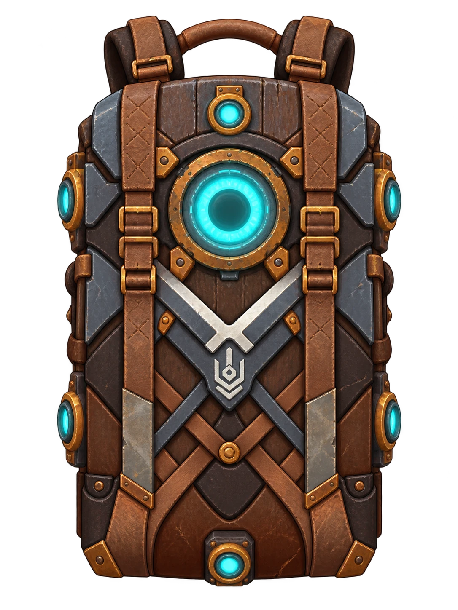

PROFIL DE DÉMONSTRATION · DEMO-1.4
Documenté
Hypothèse
À arbitrer
COMPOSITION ACTIVE
Votre sac
Glissez les modules sur les connecteurs. La forme et la couleur donnent leur rôle au premier regard.

EXPÉDITION
Profil énergétique
Énergie BPV BÉnergie A
SÉQUENCEUR
Scénario d’expédition
Construisez librement la chronologie. Chaque segment peut représenter un trajet, un combat, une récolte, une escalade, un repos ou un passage en zone sûre.
DONNÉES CONSOLIDÉES
53 entréesCatalogue des modules
Tous les modules peuvent recevoir un prototype de simulation. Les paramètres incomplets restent signalés comme hypothèses jusqu’à leur validation.
MODE LOT
Analyse automatique des builds
Teste toutes les compositions canoniques valides sur les trois scénarios. La puissance est un proxy de prototype explicite.
Lancez l’analyse pour calculer les dominants, la frontière de Pareto, les taux d’équipement et les seuils de viabilité.
EXPÉDITIONS PROBABILISTES
Simulation Monte-Carlo
Utilise le profil probabiliste défini dans l’onglet Scénario.
Configurez les variations dans Scénario, puis lancez la simulation.
Sources : P.O.I. · L.D. Biomes
Profils d’équilibrage
Nommez un état de travail, ajoutez une note de balance et restaurez-le plus tard.
VERSIONS NOMMÉES
0Bibliothèque locale
JOURNAL